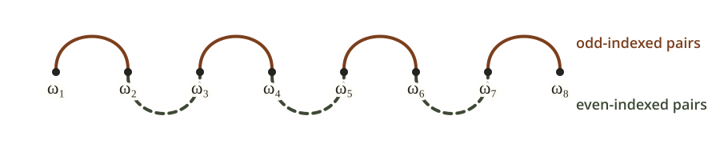

An \(\Omega(n^{-1.2408})\) Lower Bound for Anytime Gradient Descent
Introduction
In my previous blog post, we proved an \(\Omega(n^{-1.6342})\) lower bound for non-anytime gradient descent (GD) with predetermined stepsizes. The key was a term-by-term analysis of the sequence inequality arising from the hard functions of Ma and Chen.
In this post, we show that the refined term-by-term analysis developed in our previous post also sharpens the anytime lower bound. Combining this analysis with the anytime transfer argument of Tsai et al., we prove that no positive anytime stepsize schedule can achieve \(R_n(H_n)=o(n^{-1.2408})\). This improves the previous \(\Omega(n^{-4/3})\) barrier, while the best known upper bound is \(O(n^{-1.119})\).
AI Disclosure. This improvement was developed through multiple rounds of interaction with ChatGPT-5.6 Sol. The generated proof was disorganized and difficult to follow. I simplified and rewrote the mathematical presentation.
Problem Setup
Let \(\mathcal F_1(\mathbb R^d)\) be the class of convex \(1\)-smooth functions on \(\mathbb R^d\) whose sets of minimizers are nonempty. Given an integer horizon \(n\ge1\), an initial point \(x_1\in\mathbb R^d\), and a predetermined schedule \(H=(h_1,\ldots,h_n)\in(0,\infty)^n\), GD generates
\[ x_{k+1}=x_k-h_k\nabla f(x_k),\qquad 1\le k\le n. \]
The schedule \(H\) may depend on \(n\), but not on the optimization instance.
Define the worst-case convergence rate by
\[ R_n(H):= \sup_{d\in\mathbb N} \sup_{f\in\mathcal F_1(\mathbb R^d)} \sup_{x^\star\in\arg\min f} \sup_{x_1\in\mathbb R^d\setminus\{x^\star\}} \frac{f(x_{n+1})-f(x^\star)} {\frac12\lVert x_1-x^\star\rVert^2}. \]
For the anytime model, fix one positive infinite schedule \(h=(h_k)_{k\ge1}\) and write \(H_n=(h_1,\ldots,h_n)\). The same schedule \((h_k)_{k\ge1}\) is used for every horizon. An anytime statement concerns \(R_n(H_n)\) as \(n\to\infty\).
Our target. Improve Tsai’s \(\Omega(n^{-4/3})\) barrier for anytime GD toward the \(O(n^{-1.119})\) upper bound of Zhang et al.
Main Result
Theorem 1 (Main result). No positive infinite schedule \(h=(h_k)_{k\ge1}\), with \(H_n=(h_1,\ldots,h_n)\), satisfies \(R_n(H_n)=o(n^{-1.2408})\).
\[ \limsup_{n\to\infty}n^{1.2407562068\ldots}R_n(H_n)>0. \tag{1} \]

A two-row diagram uses the same horizontal exponent scale from n to the minus 2 to n to the minus 1. The upper Non-Anytime row shows the lower bounds of Nemirovsky and Yudin, Ma and Chen, Tsai, and the Previous blog at exponent 1.6342, followed by the upper bounds of Altschuler and Parrilo and Levitin and Polyak. The lower Anytime row shows the lower bounds of Nemirovsky and Yudin, Tsai and coauthors, and This work at exponent 1.2408, followed by the upper bounds of Zhang and coauthors and Levitin and Polyak.
Reduction to a sequence problem
We first reduce the anytime problem to a clean sequence inequality. Compared with Lemma 3 in the previous post, the only difference is that the power-law inequalities in (3) are assumed only for \(\ell\le k<q\).
Lemma 2 (Truncated sequence problem). Fix \(\alpha>0\). For \(w,z,x,y>0\), define
\[ K_{w,z}(x,y):= \frac{\sqrt{xy}\,(w+z+x+y)}{\sqrt{wz(w+x)(z+y)}}. \tag{2} \]
To prove \(\limsup_{n\to\infty} n^{\frac{2(1+\alpha)}{2+\alpha}}R_n(H_n)>0\) for every positive infinite schedule, it is enough to find constants \(\eta_\alpha\in(0,1)\) and \(C_\alpha<\infty\), depending only on \(\alpha\), such that the following holds for every integer \(q\ge2\) and every integer \(1\le\ell\le\eta_\alpha q\):
Given positive sequences \(x_1,\ldots,x_q\) and \(\omega_1,\ldots,\omega_q\), write \(\omega_1^\downarrow\ge\cdots\ge\omega_q^\downarrow\) for the decreasing rearrangement of \((\omega_i)\). If
\[ \sum_{i=1}^q x_i<q, \qquad \sum_{s=k+1}^q\omega_s^\downarrow \ge q\left[\left(\frac qk\right)^\alpha-1\right] \quad(\ell\le k<q), \tag{3} \]
then
\[ E_{\mathrm{end}} \prod_{i=1}^{q-1} K_{\omega_i,\omega_{i+1}}(x_i,x_{i+1}) \le C_\alpha. \tag{4} \]
where
\[ E_{\mathrm{end}} :=\sqrt{x_1x_q} \sqrt{\frac{1+x_1/\omega_1}{1+x_q/\omega_q}} \left[1+\frac{x_q+2\left(q-\sum_{i=1}^q x_i\right)}{\omega_q}\right]. \tag{5} \]
The proof of Lemma 2 uses the anytime transfer argument of Tsai et al. (cf. their Lemmas 2.1 and 3.1).
Proof sketch
Fix \(\alpha>0\) and assume that (3) implies (4), with the same constants \(\eta_\alpha,C_\alpha\) for every integer \(q\ge2\) and every integer \(1\le\ell\le\eta_\alpha q\). Set \[ \theta:=\frac{2(1+\alpha)}{2+\alpha}. \]
Fix a finite schedule \(H=(h_1,\ldots,h_n)\). Let \(a_1\ge\cdots\ge a_r>0\) be the decreasing rearrangement of the positive excesses \((h_k-1)_+\). Define \[ B:=1+\sum_{k=1}^n\min\{h_k,1\}, \qquad D_s:=B+\sum_{j=s+1}^r a_j,\qquad 1\le s\le r. \]
Part I. Prove (6) for every finite prefix.
We prove that there are constants \(c_0,C>0\), depending only on \(\alpha\), such that every \(1\le m\le r\) with \(R_n(H)D_m\le c_0\) satisfies
\[ m a_m\le C D_m, \qquad D_m\le C(n+1)^{1+\alpha}m^{-\alpha}. \tag{6} \]
If \(r=0\), there is nothing to prove. Otherwise fix \(m\) for which \(R_n(H)D_m\le c_0\).
(1) Use the \(q\) largest excesses. For any \(1\le q\le r\), choose the \(q\) largest positive excesses and list their locations as \(t_1<\cdots<t_q\). Set \(t_0=0\), \(t_{q+1}=n+1\), and \[ S_i:=\sum_{k=t_{i-1}+1}^{t_i-1}h_k, \qquad 1\le i\le q+1. \] The intervals defining \(S_1,\ldots,S_{q+1}\) partition the unselected indices, so \[ \sum_{i=1}^{q+1}(S_i+1) =q+1+\sum_{k\notin\{t_1,\ldots,t_q\}}h_k =D_q. \] Now suppose \(q\ge2\), and define \[ x_i:=\frac{q(S_i+1)}{D_q}, \qquad \omega_i:=\frac{q(h_{t_i}-1)}{D_q}, \qquad 1\le i\le q. \] Then \[ \sum_{i=1}^q x_i =q-\frac{q(S_{q+1}+1)}{D_q}<q, \qquad \omega_j^\downarrow=\frac{q a_j}{D_q}\quad(1\le j\le q). \]
Apply Ma and Chen, Theorem 4.1 to the selected indices \(t_1,\ldots,t_q\). The same bound appears in Tsai’s Lemma 6. In the resulting lower bound, the last bracket of the endpoint factor is \[ 1+\frac{x_q+2(q-\sum_i x_i)-q/D_q}{\omega_q} =\frac{S_q+h_{t_q}+2S_{q+1}+1}{h_{t_q}-1}>0. \] Replacing \(-q/D_q\) by \(0\) increases this bracket to the one in (5), which only weakens the lower bound. Therefore \[ R_n(H)\ge \frac{q}{ D_q E_{\mathrm{end}} \prod_{i=1}^{q-1}K_{\omega_i,\omega_{i+1}}(x_i,x_{i+1})}. \]
We first rule out \(m=1\) by proving \(R_n(H)D_1\ge1/4\) directly. If \(a_1\le D_1\), the Huber function used in the proof of Lemma 3 in the previous post gives \[ R_n(H)\ge\frac{1}{2(D_1+a_1)-1}\ge\frac1{4D_1}. \] If \(a_1>D_1\), apply the same lower bound with \(q=1\) at an index carrying \(a_1\). Since \(D_1=S_1+S_2+2\), we obtain \[ R_n(H)\ge \frac{a_1}{(S_1+1)(S_1+a_1+2S_2+2)} >\frac1{3D_1}>\frac1{4D_1}. \] Indeed, \(S_1+1\le D_1\) and \(S_1+a_1+2S_2+2<a_1+2D_1<3a_1\). Choose \(c_0<1/4\). Then \(R_n(H)D_m\le c_0\) implies \(m\ge2\).
(2) Prove the first inequality in (6). We claim that a constant \(L>0\) can be chosen so that \[ s a_s\le L D_s,\qquad m\le s\le r. \] Repeat part (1) with \(q=s\). If \(s a_s>L D_s\), then \(\omega_i>L\) for every \(i\). Define \[ \Gamma_1(w,z):= \sup_{x,y>0}\{\log K_{w,z}(x,y)-(x+y)\}. \] For the \(x_i,\omega_i\) just obtained with \(q=s\), the envelope calculation in Lemma 4 of the previous post gives \[ E_{\mathrm{end}} \prod_{i=1}^{s-1}K_{\omega_i,\omega_{i+1}}(x_i,x_{i+1}) \le C_0\exp\!\left\{ 2s+\sum_{i=1}^{s-1}\Gamma_1(\omega_i,\omega_{i+1}) \right\}. \] Because \(\Gamma_1\) decreases in each coordinate and \(\Gamma_1(L,L)=-\log L-1\), \[ 2s+\sum_{i=1}^{s-1}\Gamma_1(\omega_i,\omega_{i+1}) \le 2s+(s-1)(-\log L-1). \] Choose \(L\) large enough that, for some \(\delta>0\) and \(C_L<\infty\), \(2s+(s-1)(-\log L-1)\le-\delta s+C_L\) for every \(s\ge2\). The preceding product is then at most \(C_1e^{-\delta s}\). Applying the bound from part (1) with \(q=s\) gives \[ R_n(H)\ge \frac{s}{ D_s E_{\mathrm{end}} \prod_{i=1}^{s-1}K_{\omega_i,\omega_{i+1}}(x_i,x_{i+1}) } \ge\frac{s e^{\delta s}}{C_1D_s} \ge\frac{s e^{\delta s}}{C_1c_0}R_n(H), \] which is impossible after \(c_0\) is chosen sufficiently small. Thus \(s a_s\le L D_s\) for every \(m\le s\le r\), proving the first inequality in (6).
Since \(D_{s-1}=D_s+a_s\), for any \(\kappa>\max\{L,\alpha\}\) there is \(C_\kappa<\infty\) such that \[ \frac{D_m}{D_q} =\prod_{s=m+1}^q\left(1+\frac{a_s}{D_s}\right) \le\prod_{s=m+1}^q\left(1+\frac Ls\right) \le C_L\left(\frac qm\right)^L \le C_\kappa\left(\frac qm\right)^\kappa, \qquad m<q\le r. \] Equivalently, \[ \frac{D_q}{D_m} \ge C_\kappa^{-1}\left(\frac mq\right)^\kappa. \]
(3) Prove the second inequality in (6). Put \(F_s:=D_s s^\alpha\), and choose \[ q\in\operatorname*{arg\,min}_{m\le s\le r}F_s. \] We first prove that \(F_m\le A F_r\) for a constant \(A\) depending only on \(\alpha\). If \(F_m>A F_r\), then \(q>m\) and \[ \frac{F_q}{F_m}<\frac1A, \qquad \frac{F_q}{F_m} =\frac{D_q}{D_m}\left(\frac qm\right)^\alpha \ge C_\kappa^{-1}\left(\frac mq\right)^{\kappa-\alpha}. \] The two inequalities imply \[ \frac qm>\left(\frac A{C_\kappa}\right)^{1/(\kappa-\alpha)}. \] Taking \(A\ge C_\kappa\eta_\alpha^{-(\kappa-\alpha)}\) ensures that \(m\le\eta_\alpha q\). For every \(m\le k<q\), the minimizing property of \(q\) gives \[ \sum_{s=k+1}^q\omega_s^\downarrow =q\left(\frac{D_k}{D_q}-1\right) \ge q\left[\left(\frac qk\right)^\alpha-1\right]. \] Thus these \(x_i,\omega_i\) satisfy (3) with \(\ell=m\). Applying (4) gives \[ E_{\mathrm{end}} \prod_{i=1}^{q-1} K_{\omega_i,\omega_{i+1}}(x_i,x_{i+1}) \le C_\alpha. \] Combining the bound from part (1), (4), and \(D_q\le D_m\le c_0/R_n(H)\) gives \[ R_n(H)\ge\frac{q}{C_\alpha D_q} \ge\frac{q}{C_\alpha c_0}R_n(H), \] again a contradiction after \(c_0\) is decreased if necessary. Hence \(F_m\le A F_r\). Since \(D_r=B\le n+1\) and \(r\le n\), \[ D_m m^\alpha=F_m \le A F_r =A D_r r^\alpha \le A(n+1)n^\alpha. \] Therefore \(D_m\le C(n+1)^{1+\alpha}m^{-\alpha}\), proving the second inequality in (6).
Part II. Deduce the anytime conclusion from (6).
Fix a positive infinite schedule and write \(\Sigma_n:=\sum_{k=1}^n h_k\). For each prefix \(H_n\), define \(a_1,\ldots,a_r,B,D_s\) as in Part I. We use the quadratic lower bound and the terminal-step bound \[ R_n(H_n)\ge\frac1{4(1+2\Sigma_n)}, \qquad h_n-1\le(1+\Sigma_{n-1})\sqrt{R_n(H_n)} \quad\text{when }h_n>1. \] For the first inequality, Tsai et al., Lemma 2.1(i) chooses the admissible quadratic \(f(x)=\lambda x^2/2\) with \(\lambda=(1+2\Sigma_n)^{-1}\) and obtains a normalized final gap of at least \(1/[4(1+2\Sigma_n)]\). Since this quadratic is included in the supremum defining \(R_n(H_n)\), the first inequality follows. For the second inequality, take \(m=n\) in their Lemma 3.1. When \(h_n>1\), it gives \(R_n(H_n)\ge (h_n-1)^2/(1+\Sigma_{n-1})^2\), which rearranges to the displayed terminal-step bound.
Suppose for contradiction that \(R_n(H_n)=o(n^{-\theta})\). Since \(\theta>1\), the quadratic lower bound implies \(\Sigma_n/n\to\infty\). Hence the steps are unbounded, so there are infinitely many indices \(n\) such that \(h_n>\max_{k<n}h_k\).
Fix a sufficiently large record time \(n\). Then \(a_1=h_n-1\). For a fixed \(\varepsilon\in(0,1/2)\), define \[ m_\star:=\left\lfloor \frac{\varepsilon}{\sqrt{R_n(H_n)}} \right\rfloor. \] If \(r\le m_\star\), the terminal-step bound gives \[ \sum_{j=1}^r a_j \le m_\star a_1 \le\varepsilon(1+\Sigma_n). \] Since \(\Sigma_n=(B-1)+\sum_{j=1}^r a_j\) and \(B-1\le n\), this would imply \(\Sigma_n=O(n)\), a contradiction. Thus \(r>m_\star\).
We next prove \(R_n(H_n)D_{m_\star}\le c_0\). Suppose instead that \(R_n(H_n)D_{m_\star}>c_0\). Since \(R_n(H_n)D_r=R_n(H_n)B\le R_n(H_n)(n+1)\to0\), there is a first \(q>m_\star\) such that \(R_n(H_n)D_q\le c_0\). Applying both inequalities in (6) with \(m=q\) gives \[ D_{q-1}=D_q+a_q \le\left(1+\frac Cq\right)D_q \le C(n+1)^{1+\alpha}q^{-\alpha}. \] For all sufficiently large record times, \(q>m_\star\ge\varepsilon/(2\sqrt{R_n(H_n)})\). Therefore \[ R_n(H_n)D_{q-1} \le C_\varepsilon n^{1+\alpha}R_n(H_n)^{1+\alpha/2} =C_\varepsilon\bigl(n^\theta R_n(H_n)\bigr)^{(2+\alpha)/2} =o(1), \] contradicting the definition of \(q\), which gives \(R_n(H_n)D_{q-1}>c_0\). Hence \(R_n(H_n)D_{m_\star}\le c_0\).
For every \(m_\star<j\le r\), \(D_j\le D_{m_\star}\), so \(R_n(H_n)D_j\le c_0\). Applying (6) with \(m=j\) gives \[ a_j\le\frac{C D_j}{j} \le C(n+1)^{1+\alpha}j^{-1-\alpha}. \] For \(1\le j\le m_\star\), we have \(a_j\le a_1=h_n-1\), so the terminal-step bound controls the first sum below. For \(m_\star<j\le r\), summing \(a_j\le C(n+1)^{1+\alpha}j^{-1-\alpha}\) gives the second sum. \[ \sum_{j=1}^{m_\star}a_j \le m_\star a_1 \le\varepsilon(1+\Sigma_n), \qquad \sum_{j=m_\star+1}^{r}a_j \le C_\varepsilon n^{1+\alpha}R_n(H_n)^{\alpha/2}. \] Using \(\Sigma_n=(B-1)+\sum_j a_j\), \(B-1\le n\), and \(\varepsilon<1/2\), move the term \(\varepsilon\Sigma_n\) to the left to obtain \[ \Sigma_n\le C_\varepsilon\left(n+n^{1+\alpha}R_n(H_n)^{\alpha/2}\right). \] Multiplying by \(R_n(H_n)\) gives \[ R_n(H_n)\Sigma_n \le C_\varepsilon\left( nR_n(H_n)+n^{1+\alpha}R_n(H_n)^{1+\alpha/2} \right) =C_\varepsilon\left( nR_n(H_n)+\bigl(n^\theta R_n(H_n)\bigr)^{(2+\alpha)/2} \right) =o(1). \] But the quadratic lower bound is equivalent to \(R_n(H_n)(1+2\Sigma_n)\ge1/4\), a contradiction. Therefore \[ \limsup_{n\to\infty}n^\theta R_n(H_n)>0. \]
Proving the sequence inequality
It remains to prove (4). For \(\lambda>0\), define
\[ \begin{aligned} \Gamma_\lambda(w,z) &:=\sup_{x,y>0} \bigl\{\log K_{w,z}(x,y)-\lambda(x+y)\bigr\},\\ W_\alpha(t)&:=\alpha t^{-1-\alpha},\qquad 0<t\le1,\\ J(\alpha,\lambda) &:=2\lambda+2\int_0^{1/2} \Gamma_\lambda\bigl(W_\alpha(t),W_\alpha(1-t)\bigr)\,dt. \end{aligned} \tag{7} \]
The following Fact comes directly from the previous blog and corresponds to the \(\ell=1\) special case of Lemma 2.
Fact 3 (The estimate from the previous post). Fix \(\alpha,\lambda>0\). There is a constant \(C_{\alpha,\lambda}<\infty\), depending only on \(\alpha,\lambda\), such that the following holds for every integer \(q\ge2\) and every pair of positive sequences \((x_i)_{i=1}^q\), \((\omega_i)_{i=1}^q\). If \(\sum_i x_i<q\) and
\[ \sum_{s=k+1}^q\omega_s^\downarrow \ge q\left[\left(\frac qk\right)^\alpha-1\right] \qquad(1\le k<q), \]
then
\[ E_{\mathrm{end}} \prod_{i=1}^{q-1} K_{\omega_i,\omega_{i+1}}(x_i,x_{i+1}) \le C_{\alpha,\lambda} \exp\!\left\{qJ(\alpha,\lambda)\right\}. \tag{8} \]
However, under the truncated condition (3), \(\omega_1^\downarrow,\ldots,\omega_\ell^\downarrow\) have no constraint. We therefore set these values aside and apply the same estimation technique as in Fact 3. Lemma 4 shows that this changes the exponent by at most \(O_{\alpha,\lambda}(\ell+1)\).
Lemma 4. Fix \(\alpha,\lambda>0\). There are constants \(A_{\alpha,\lambda}>0\) and \(B_{\alpha,\lambda}\ge0\), depending only on \(\alpha,\lambda\), such that the following holds for every integer \(q\ge2\), every integer \(1\le\ell<q\), and all positive sequences \((x_i)_{i=1}^q\), \((\omega_i)_{i=1}^q\). If the conditions in (3) hold, then
\[ E_{\mathrm{end}} \prod_{i=1}^{q-1} K_{\omega_i,\omega_{i+1}}(x_i,x_{i+1}) \le A_{\alpha,\lambda} \exp\!\left\{ qJ(\alpha,\lambda)+B_{\alpha,\lambda}(\ell+1) \right\}. \tag{9} \]
Proof sketch
(1) Eliminate the \(x_i\)’s.
Taking \(k=q-1\) in (3) gives \[ \min_i\omega_i=\omega_q^\downarrow \ge q\left[\left(\frac q{q-1}\right)^\alpha-1\right] \ge\alpha, \] where the last inequality follows from \((1-1/q)^{-\alpha}\ge1+\alpha/q\). The definition of \(\Gamma_\lambda\), the budget \(\sum_i x_i<q\), and the endpoint calculation from Lemma 4 of the previous post give
\[ E_{\mathrm{end}} \prod_{i=1}^{q-1} K_{\omega_i,\omega_{i+1}}(x_i,x_{i+1}) \le C_{\alpha,\lambda} \exp\!\left\{ 2\lambda q+ \sum_{i=1}^{q-1} \Gamma_\lambda(\omega_i,\omega_{i+1}) \right\}. \tag{10} \]
It remains to bound the sum in (10).
(2) Set aside the \(\ell\) unconstrained largest values and compare the remaining values with an explicit sequence.
The sum in (10) contains one term for each consecutive pair \((\omega_i,\omega_{i+1})\). Separate these pairs into the two alternating groups \[ (\omega_1,\omega_2),(\omega_3,\omega_4),\ldots \qquad\text{and}\qquad (\omega_2,\omega_3),(\omega_4,\omega_5),\ldots. \]

The \(\ell\) values \(\omega_1^\downarrow,\ldots,\omega_\ell^\downarrow\) do not occur in the tail inequalities in (3). Mark their positions in the original sequence, breaking ties arbitrarily, and set aside every consecutive pair containing a marked position. No new pair is created. Each marked position belongs to at most one pair in each group, so at most \(2\ell\) terms are set aside.
Let \(M_0\) and \(M_1\) be the pairs that remain in the first and second groups, respectively, and put \[ k_\nu:=|M_\nu|, \qquad d_\nu:=q-2k_\nu. \] Thus \(d_\nu\) is the number of positions not used by \(M_\nu\). Before any terms are set aside, either group leaves at most two positions unused. Each marked position can eliminate at most one pair in each group, and every eliminated pair adds two unused positions. Hence \[ \ell\le d_\nu\le2\ell+2. \]
For \(2\le s\le q\), define \[ \bar w_s^{(q)} :=q^{1+\alpha}\bigl((s-1)^{-\alpha}-s^{-\alpha}\bigr). \] Since \(u\mapsto\alpha u^{-1-\alpha}\) is decreasing, \(\bar w_q^{(q)}\le\cdots\le\bar w_2^{(q)}\). For every \(\ell\le m<q\), \[ \sum_{s=m+1}^q\bar w_s^{(q)} =q\left[\left(\frac qm\right)^\alpha-1\right]. \] Hence (3) gives, for every \(1\le j\le q-\ell\), \[ \sum_{s=q-j+1}^q\omega_s^\downarrow \ge \sum_{s=q-j+1}^q\bar w_s^{(q)}. \] Every \(M_\nu\) consists of \(k_\nu\) disjoint pairs drawn from \(\omega_{\ell+1}^\downarrow,\ldots,\omega_q^\downarrow\). The largest sum over all choices of \(k_\nu\) disjoint pairs is symmetric, jointly convex, and decreasing in each coordinate. Indeed, each fixed pairing sum is convex and decreasing, taking the maximum preserves both properties, and allowing every pairing makes the maximum symmetric. These properties of \(\Gamma_\lambda\) are proved in Lemma 5 of the previous post. The weak-majorization argument in the previous post then gives, for \(\nu\in\{0,1\}\), \[ \sum_{\{i,j\}\in M_\nu} \Gamma_\lambda(\omega_i,\omega_j) \le \max_{\substack{\mathcal M\text{ consists of }k_\nu\text{ disjoint pairs}\\ \text{from }\{\ell+1,\ldots,q\}}} \sum_{\{a,b\}\in\mathcal M} \Gamma_\lambda(\bar w_a^{(q)},\bar w_b^{(q)}). \]
(3) Identify the largest pairing sum and compare it with the integral.
Because \(\Gamma_\lambda\) decreases in each coordinate, the maximum above uses the \(2k_\nu\) smallest values among \(\bar w_{\ell+1}^{(q)},\ldots,\bar w_q^{(q)}\). Strict submodularity, also proved in Lemma 5 of the previous post, then pairs the smallest of the selected values with the largest, the second smallest with the second largest, and so on. Consequently, \[ \sum_{\{i,j\}\in M_\nu} \Gamma_\lambda(\omega_i,\omega_j) \le \sum_{j=1}^{k_\nu} \Gamma_\lambda\!\left( \bar w_{q+1-j}^{(q)}, \bar w_{d_\nu+j}^{(q)} \right). \]
Put \[ I_{\alpha,\lambda} :=\int_0^{1/2} \Gamma_\lambda(W_\alpha(t),W_\alpha(1-t))\,dt. \] We need the following shifted Riemann-sum bound. Whenever \(d=q-2k\ge1\),
\[ \sum_{j=1}^{k} \Gamma_\lambda\!\left( \bar w_{q+1-j}^{(q)}, \bar w_{d+j}^{(q)} \right) \le qI_{\alpha,\lambda} +C_{\alpha,\lambda}(d+1). \tag{11} \]
To prove (11), first suppose \(d\ge q/4\). Since \(\bar w_s^{(q)}\ge\alpha\) for every \(s\), each summand is at most \(M_{\alpha,\lambda}:=\max\{0,\Gamma_\lambda(\alpha,\alpha)\}\). Therefore \[ \sum_{j=1}^{k} \Gamma_\lambda( \bar w_{q+1-j}^{(q)},\bar w_{d+j}^{(q)}) -qI_{\alpha,\lambda} \le q\left(\frac{M_{\alpha,\lambda}}2+|I_{\alpha,\lambda}|\right) \le C_{\alpha,\lambda}d. \]
Now suppose \(d<q/4\). By the mean-value theorem, for each \(2\le s\le q\) there is \(\xi_s\in(s-1,s)\) such that \[ \bar w_s^{(q)}=W_\alpha(\xi_s/q). \] Define \[ g_{\alpha,\lambda}(u) :=\Gamma_\lambda(W_\alpha(u),W_\alpha(1-u)), \qquad 0\le u\le\frac12, \] where the value at \(u=0\) is defined by continuity. The Lipschitz estimate proved in the previous post applies to \((u,v)\mapsto\Gamma_\lambda(W_\alpha(u),W_\alpha(v))\) on \([0,1/2]\times[1/2,1]\).
For each \(j\) such that \(u_j:=(d+j)/q\le1/2\), \[ \left|\frac{\xi_{d+j}}q-u_j\right|\le\frac1q, \qquad \left|\frac{\xi_{q+1-j}}q-(1-u_j)\right| \le\frac{d+1}{q}. \] Symmetry and the Lipschitz estimate give \[ \Gamma_\lambda\!\left( \bar w_{q+1-j}^{(q)},\bar w_{d+j}^{(q)} \right) \le g_{\alpha,\lambda}(u_j) +C_{\alpha,\lambda}\frac{d+1}{q}. \] There are at most \(d+1\) indices with \(u_j>1/2\). Since \(d<q/4\), the two mean-value points for each of these indices lie in \([1/4,1]\). Thus both arguments of \(\Gamma_\lambda\) lie in \([\alpha,\alpha4^{1+\alpha}]\), and the total contribution of these terms is at most \(C_{\alpha,\lambda}(d+1)\). For the other indices, the grid \(u_j\) has mesh \(1/q\) and begins at \((d+1)/q\). The Lipschitz bound for \(g_{\alpha,\lambda}\) therefore gives \[ \sum_{j:\,u_j\le1/2}g_{\alpha,\lambda}(u_j) \le qI_{\alpha,\lambda}+C_{\alpha,\lambda}(d+1). \] Summing the error \(C_{\alpha,\lambda}(d+1)/q\) over these indices and adding the at most \(d+1\) terms with \(u_j>1/2\) proves (11).
Apply (11) to the two groups, with \((k,d)=(k_\nu,d_\nu)\). Add back the at most \(2\ell\) terms set aside in part (2). By part (1), \(\omega_i\ge\alpha\) for every \(i\), so each such term is at most \(B_0:=\max\{0,\Gamma_\lambda(\alpha,\alpha)\}\). Since \(d_\nu\le2\ell+2\), we obtain
\[ \sum_{i=1}^{q-1} \Gamma_\lambda(\omega_i,\omega_{i+1}) \le 2qI_{\alpha,\lambda} +C_{\alpha,\lambda}(\ell+1). \tag{12} \]
Combining (10) and (12), and using \(J(\alpha,\lambda)=2\lambda+2I_{\alpha,\lambda}\), proves (9).
Proof of Theorem 1
With Lemmas 2 and 4 in hand, Theorem 1 follows easily.
Take \(\alpha=0.6342\) and \(\lambda=0.4506\). Numerical integration (verification appendix) gives
\[ J(0.6342,0.4506)<-0.00005<0. \tag{13} \]
Choose \(\eta_\alpha\in(0,1)\) small enough that \(B_{\alpha,\lambda}\eta_\alpha\le-J(\alpha,\lambda)/2\). If \(\ell\le\eta_\alpha q\), Lemma 4 and (9) give \[ \begin{aligned} E_{\mathrm{end}} \prod_{i=1}^{q-1} K_{\omega_i,\omega_{i+1}}(x_i,x_{i+1}) &\le C\exp\!\left\{ qJ(\alpha,\lambda)+B_{\alpha,\lambda}(\ell+1) \right\}\\ &\le C\exp\!\left\{\frac12qJ(\alpha,\lambda)\right\} \le Ce^{-cq}, \end{aligned} \] where the constant \(C\) absorbs the factor \(e^{B_{\alpha,\lambda}}\). In particular, (4) holds uniformly in \(q\) and \(\ell\).
The certificate (13) and Lemma 4 verify the hypothesis of Lemma 2 with \(\alpha=0.6342\). Lemma 2 gives \[ \frac{2(1+\alpha)}{2+\alpha} =\frac{2(1+0.6342)}{2+0.6342} =1.2407562068\ldots, \] which proves (1).
Bibliographic Information
@misc{ye2026anytime,
author = {Yuhan Ye},
title = {{An $\Omega(n^{-1.2408})$ Lower Bound for Anytime Gradient Descent}},
year = {2026},
note = {Blog post},
url = {https://yeyuhanyyh.github.io/gd-anytime-lower-bound/}
}